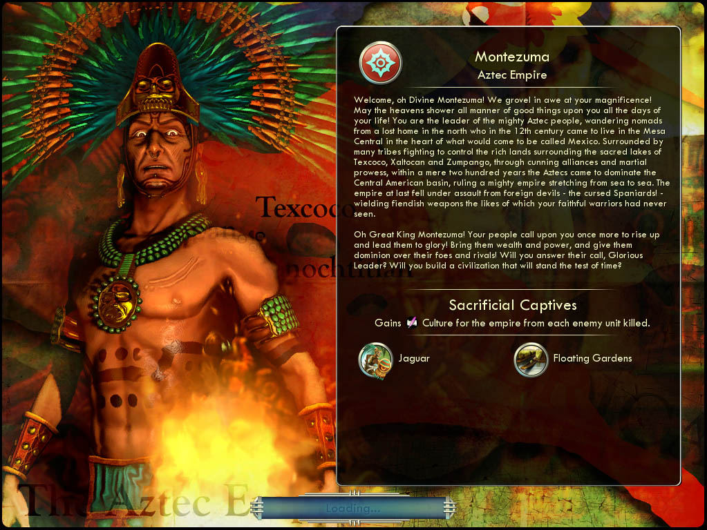

몬테수마 Montezuma아즈텍 The Aztecs |
|  |
| 성스러운 몬테수마여! 그대의 위엄 앞에 엎드려 절 하나이다! 그 앞날에 하늘의 축복이 가득하기를! 그대는 위대한 아즈텍의 지도자십니다. 아즈텍인은 북쪽의 고향을 잃고 유랑해온 유목민으로, 12세기에 훗날 멕시코가 될 땅의 중앙에 있는 메사센트랄에 정착했습니다. 아즈텍인은 성스러운 호수 텍스코코, 살로칸, 슴팡고 주위의 풍요로운 땅을 점령하기 위해 싸우는 여러 부족의 틈바구니에서, 절묘한 동맹과 뛰어난 무용으로써 중미 지역을 지배하고 바다에서 바다에 이르는 강대한 제국을 건설했습니다. 그러나 그대의 충직한 전사들은 결코 본 적 없는 악마 같은 무기를 휘두르는 외세의 악마, 저주받을 스페인의 공격에 쓰러졌고 아즈텍 제국은 마침내 몰락하고 말았습니다.
위대한 왕 몬테수마여! 백성은 그대가 다시금 일어나 과거의 영광을 되찾아주리라 믿습니다! 백성에게 부와 권력을 안겨주고, 적을 지배할 힘을 주십시오! 백성의 믿음에 답하여 세월의 시련을 이겨낼 문명을 건설해 주시겠습니까? |
| 속성 | |
|---|---|
| 특성 |
포로 공양
(Sacrificial Captives) 적 유닛을 죽일 때마다 문화를 얻습니다. |
| 고유유닛 |
재규어
(Jaguar) 전사를 대체하는 고유 유닛입니다. 벌목꾼 진급, 숲과 밀림에서 전투시 보너스 +33%를 얻는 승급과 적 유닛을 죽이면 즉시 HP가 25 회복되는 승급을 얻습니다. |
| 고유건물 |
수상 정원
(Floating Gardens) 물레방앗간을 대체하는 고유 건물입니다. 물레방앗간의 기본 기능(식량 +2, 망치 +1)에, 유지비가 1입니다(원래는 2), 식량 생산이 15% 증가하고 주변 호수 타일에서 얻는 식량이 2 증가합니다. 강이나 호수 옆에 있는 도시에서만 건설할 수 있습니다. |
| 시작지점 | 정글 |